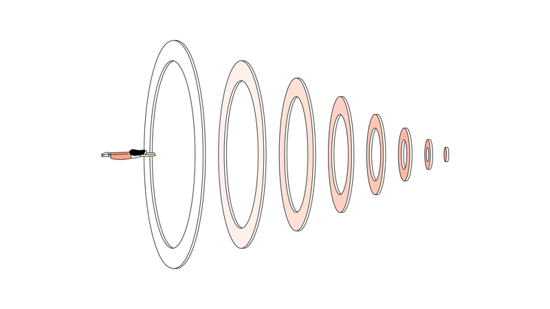

What's your struggle
Stress, Sleep, Focus, Anxiety, Confidence, Motivation ....


Features ressources

THE NEW YORK TIMES — #FOCUS — 10 MIN
Cal Newport: How to Actually, Truly Focus on What You’re Doing
By Tim Herrera

YOUTUBE — #SLEEP — 1H 55MIN
JRE #1109 - Matthew Walker
BY JOE ROGAN

THE GUARDIAN — #SLEEP — 10 MIN
Sleep: How Much Do We Really Need?
BY HANNAH DEVLIN